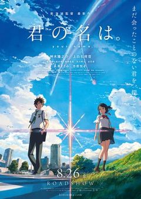
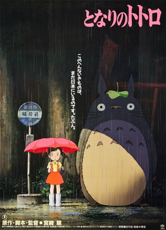
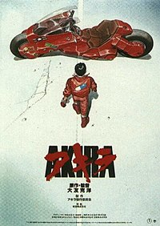
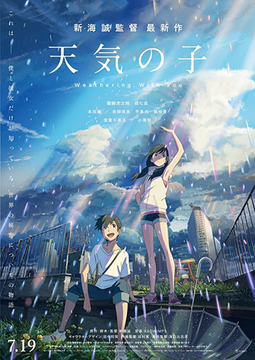
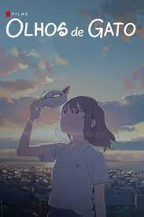

Koe no Katachi
19/03/2022
Ishida Shōya é um menino ativo que é próximo de dois amigos, Shimada e Hirose. A história começa quando Nishimiya Shōko - uma garota da 6ª classe com perda auditiva congênita é transferida para a classe Shōya. No início, todos estavam animados para iniciar uma conversa com Shōko, mas ela desapareceu à medida que eles estavam fartos de sua forma incomum de comunicação. Até mesmo Ueno - a garota que ajudou muito Shōko quando ela entrou nesta classe virou as costas. Enquanto Shōko foi condenada ao ostracismo pela classe, Sahara foi a única que queria falar com ela, mas devido à pressão de amigos, Sahara mudou de escola. Shōya estava em parte por curiosidade, em parte porque ela sentiu que Shōko mudou seu ambiente e começou a intimidá-la, embora Shōko estivesse sempre disposto a fazer amizade com ele. Em cinco meses, Shōko foi exibido por Shōya e perdeu até oito aparelhos auditivos caros. A mãe de Shōko contatou a escola com medo de sua filha ser intimidada. Shōya foi rejeitada por seus amigos e se tornou alvo de bullying em seu nome, após o que Shōko transferiu sua escola para outro lugar.
Postado por Fernando Soethe KesslerKimi ni no Wa
19/03/2022 Mitsuha é uma garota do ensino médio que mora na cidade de Itomori, na região montanhosa de Hida, Japão. Entediada com a vida no campo, deseja ter uma vida mais agitada, querendo mudar-se para Tóquio. Com sua avó e irmã mais nova, ela faz kuchikamizake saquê e o leva como oferenda ao túmulo da família em uma montanha fora da cidade.Taki, um garoto do ensino médio que vive em Tóquio, começa a trocar de corpo com Mitsuha por várias vezes. Eles percebem que isso não é um sonho quando seus amigos e familiares dizem que eles agiram muito estranhamente recentemente. Um dia, ambos decidem começar a se comunicar, deixando bilhetes. Um dia as trocas param causando curiosidade em Taki sobre o motivo, motivando-o a procurar sobre o povoado de Mitsuha, o que o leva a uma terrível descoberta, que o motiva a ir mais a fundo em suas pesquisas.
Postado por Fernando Soethe KesslerTonari no Totoro
19/03/2022 As irmãs Mei e Satsuke mudam-se para uma nova casa e descobrem que uma floresta nas proximidades é habitada por criaturas chamadas totoros. Elas acabam se tornando amigas do mais velho deles, e ficam boa parte do tempo com ele, pois a mãe delas está num hospital e o pai sai para dar aulas. Ao mesmo tempo que mostra a elas algumas verdades da vida, o totoro lhes mostra um mundo fantástico.Tonari no Totoro (bra: Meu Amigo Totoro; prt: O Meu Vizinho Totoro) é um filme de animação japonês de 1988, dos gêneros fantasia, drama e aventura, dirigido por Hayao Miyazaki para a Studio Ghibli, com roteiro de Miyazaki e Cindy Davis Hewitt O filme conta a história das duas jovens filhas (Satsuki e Mei) de um professor e suas aventuras com espíritos da floresta amigáveis no Japão pós-guerra rural.
Postado por Fernando Soethe KesslerAkira
19/03/2022 Uma das maiores referências no que diz respeito à cultura cyberpunk e à ficção científica oriental, Akira é baseado no mangá homônimo de Katsuhiro Otomo (que também assume a direção do longa-metragem. Na trama - que se situa no ano de 2019 -, vemos o líder de uma gangue de motoqueiros que começa a desenvolver habilidades especiais.Eventualmente, esses poderes acabam ameaçando a vida do próprio rapaz, que perde sua sanidade e precisa ser impedido de cometer atrocidades terríveis. O legado de Akira é sentido até hoje, já que o filme influenciou vários animes posteriores e até mesmo produções de Hollywood, como A Origem e Poder Sem Limites.
Postado por Fernando Soethe KesslerDemon Slayer:Mugen Train
19/03/2022
Depois que uma série de desaparecimentos misteriosos começam a assolar um trem, as múltiplas tentativas do Demon Slayer Corps para remediar o problema se mostram infrutíferas. Para evitar mais baixas, o pilar de chamas, Kyoujurou Rengoku, assume a responsabilidade de eliminar a ameaça. Acompanhando-o estão alguns dos novos sangues mais promissores do Corpo: Tanjirou Kamado, Zenitsu Agatsuma e Inosuke Hashibira, que esperam testemunhar os feitos de fogo deste modelo de matador de demônios em primeira mão.Sem o conhecimento deles, as forças demoníacas responsáveis pelos desaparecimentos já colocaram seu plano sinistro em ação. Sob esta presença demoníaca, o grupo deve reunir cada grama de sua força de vontade e desembainhar suas espadas para salvar todos os duzentos passageiros a bordo. Filme Kimetsu no Yaiba: Mugen Ressha-heninvestiga os cantos mais profundos da mente de Tanjirou, colocando sua determinação e compromisso com o dever à prova.
Postado por Fernando Soethe KesslerTenki no Ko
19/03/2022 O estudante do ensino médio Hodaka Morishima deixa seu lar numa ilha isolada e se muda pra Tóquio. Vive seus dias em isolamento, mas finalmente encontra um emprego como escritor para uma revista obscura ocultista. Depois de começar seu trabalho, o tempo fica chuvoso dia após dia. Em um canto da cidade cheia e agitada, Hodaka conhece uma garota chamada Hina Amano. Devido a certas circunstâncias, Hina e seu irmão mais novo vivem juntos, mas têm uma vida alegre e resistente. Hina também tem um certo poder: o poder de fazer parar de chover e limpar o céu.
Postado por Fernando Soethe KesslerSaidā no Yō ni Kotoba ga Wakiagaru
19/03/2022
Palavras que Borbulham como Refrigerante (japonês :サイダーのように言葉が湧き上がる, Saidā no Yō ni Kotoba ga Wakiagaru) é um filme de comédia-romântica animado japonês produzido pela Sublimation e Signal.MD e dirigido por Kyohei Ishiguro. Ele estreou no Festival Internacional de Cinema de Xangai de 2020. Foi lançado nos cinemas japoneses em 22 de julho de 2021 e na Netflix no mesmo dia internacionalmente. Ambientado em uma parte rural do Japão com um grande shopping center, o filme segue duas pessoas que têm problemas para se comunicar com os outros. Yui, também chamado de "Cerejinha", é um garoto tímido que só consegue falar através de sua escrita de haikus. Yuki, também conhecida como "Sorrisinho", cobre a boca com uma máscara para esconder o aparelho que tenta consertar seu defeito de nascença e é uma influenciadora on-line. Um encontro fatídico no shopping inicia um romance entre eles.
Postado por Fernando Soethe KesslerNakitai Watashi wa Neko wo Kaburu
19/03/2022 Miyo Sasaki é uma garota infeliz do ensino médio que mora na cidade de Tokoname que não se dá bem com sua madrasta. Todos os dias na escola, ela se esforça para flertar com o seu "namorado", Kento Hinode, apesar de suas repetidas rejeições. Um dia, Miyo recebe uma máscara mágica de Noh, de um misterioso vendedor de máscaras, que deixa ela se tornar uma gata. Como "Tarō", ela passa um tempo com Hinode em sua casa, faz companhia enquanto ele estuda cerâmica japonesa e ouve seus problemas. Ela deseja confessar que o gato que ele ama e a garota que ele odeia são a mesma pessoa, mas tem medo de que ele a rejeite e se recuse a visitar como Tarō novamente.Um dia, Miyo ouve dois meninos na escola falando mal de Hinode e intervém alto para defender sua honra. Ela se machuca durante a briga e, pela primeira vez, Hinode mostra calor enquanto ele a leva para o escritório da enfermeira e compartilha seu almoço com ela. Mais tarde naquela noite, como Tarō, Miyo descobre que a família de Hinode está fechando sua loja de cerâmica, pois seu avô está se aposentando e a família não pode mais pagar.
Postado por Fernando Soethe Kessler